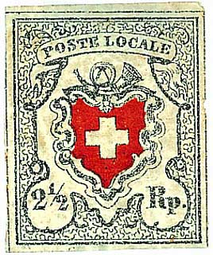

{kind=link}


Return To Catalogue -
Switzerland overview - Types of the 1850 issue, part 1 - Types of the 1850 issue, part 2 - Issues form 1854-1881 - Issues from 1882-1906 - Issues from 1907-1920
- Cantonal issues: Basel - Geneva - Neuchatel
- Vaud - Winterthur
- Zurich -
Fiscal Stamps - Miscellaneous;
railway, due, Campione etc. - Cancels
on first federal issue, part 1 - Cancels
on first federal issue, part 2 - Pro
Juventute (Chilrens welfare stamps) - Hotel
Labels - Pro Juventute - Menke-Huber postcards
Note: on my website many of the
pictures can not be seen! They are of course present in the
catalogue;
contact me if you want to purchase the catalogue.
Many stamps of the first issued and cantonal stamps can be found on the website http://www.ghonegger.ch/ (with many beautiful pictures of the rarities of this country). A very nice website can be found on: http://www.timbressuisses.ch.
inscription 'POSTE LOCALE' (=local post in french)
2 1/2 Rp black and red Inscription 'ORTS-POST' (=local post in german)

2 1/2 Rp black and red Inscription 'RAYON I'
5 Rp black and red on blue 5 Rp blue and red (1851) Inscription 'RAYON II'

10 Rp black and red on yellow Inscription 'RAYON III'


15 Rp red (large value, 1852) 15 Rp red (small value,1852) 15 Cts red (1852)
Value of the stamps |
|||
vc = very common c = common * = not so common ** = uncommon |
*** = very uncommon R = rare RR = very rare RRR = extremely rare |
||
| Value | Unused | Used | Remarks |
| 2 1/2 r Poste Locale | RRR | RRR | |
| 2 1/2 r Ortspost | RRR | RR | without cross outline: RRR |
| 5 r black and red on blue | RR | R | with cross outline: RR |
| 5 r blue and red | R | *** | with cross outline: RRR |
| 10 r | R | *** | with cross outline: RRR |
| 15 r (large value) | RR | *** | |
| 15 r (small value) | RRR | RR | |
| 15 c | RRR | RR | |
The 'Ortspost', 'Poste Locale', 'Rayon I' and 'Rayon II' exist in 40 types each. The 'Rayon III' stamps exist in 10 different types each. Click here for more information of the types of the 1850 Poste Locale and Ortspost issue, here for the types of the 1850 Rayon I issue and here for the types of the 1850 issue Rayon II, or RayonIII. Furthermore specialists distinguish stamps with a black outline of the cross and stamps without this outline (framed central cross or 'Kreuzeinfassung' in german or 'croix encadree' in french). Examples of these crosses:
5 rp 'Rayon I', black and red on blue with black outline around
cross (left) and without (right)
The 'Ortspost', 'Poste Locale', 'Rayon I' and 'Rayon II' exist with or without these crosses. The 'Ortspost' and 'Poste Locale' are more common with outline, the 'Rayon I' (both colours) and the 'Rayon II' are more common without outline. The 'Rayon II' is extremely rare with outline(be aware of forgeries where a cross is added!). The 'Poste Locale' without outline is also very rare.
The 2 1/2 rp stamps were issued first in 1850 and could only be used for local letters (heavier letters needed more stamps). For letters to be send outside the local area the 'Rayon' stamps were issued later.
For typical cancels on first federal issues click here or here.
Stamp: |
Date of issue: |
| 2 1/2 r Orts-Post | 18th May 1850 |
| 2 1/2 r Poste Locale | 1st October 1850 |
| 5 r Rayon I black and red on blue | 1st October 1850 |
| 10 r Rayon II | 1st October 1850 |
| 5 r Rayon I blue and red | 2nd March 1851 |
| 15 r (small) Rayon III | 1st January 1852 |
| 15 cts Rayon III | 1st January 1852 |
| 15 r (large) Rayon III | April 1852 |
All these stamps were valid for use upto 30th September 1854.
A mini sheet for the Naba Exhibition in 1971 featuring four 50 Rp
stamps in a similar design as the 5 Rp 1850 issue
Many forgeries exists, they are often hard to distinguish from
genuine stamps because many types of
the genuine stamps exist as well. Examples
of forged stamps can be found here and here
(some of the above shown stamps could very well be forgeries
too!). Click here for forgeries of this
issue made by Sperati.
The forger Fournier also had many forgeries and forged cancels in
his 'collection':
Switzerland forgeries of the 1850 issue,
part 4 (Fournier),
Switzerland forgeries of the 1850 issue,
part 5 (Fournier),
Switzerland Fournier forgeries and
Switzerland Fournier forged cancels.
A really nice website on forgeries of Switzerland (in German) with large pictures can be found at: http://briefmarken.ag/: a treasure full with information (also of the Cantonal issues)! The information is rather difficult to find though and often hidden deep inside the website.
Another very interesting site can be found at: www.swiss-stamps.us. Especially interesting is the fact that all their bulletins from 1938 to 2005 are scanned and can be consulted online.
'Les Timbres-Poste Suisses 1843-1862' by P.Mirabaud and A.De Reuterskiold available on http://www.archive.org (in French); deals with the classical stamps of Switzerland and its cancels.
The most famous catalogue of Switzerland is the Zumstein catalogue (in German).
A dealer label of the Zumstein company, inscription 'E.ZUMSTEIN
BRIEFMARKENHAUS BERN', showing a bear leaning on a Basel stamp.
{kind=link}